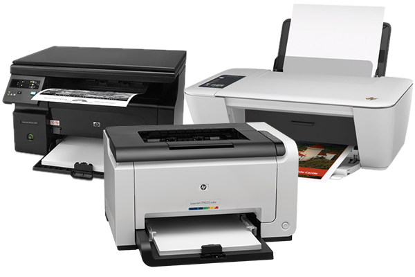

A história da impressora se inicia em 1938, por meio do americano Chester Carlson.
É notória a importância das impressoras hoje em dia. Seus mecanismos proporcionam a impressão de documentos com uma
imensa rapidez e facilidade,ideia que vem desde as arcaicas máquinas de escrever. Desta forma, é fácil perceber que,
de uma forma ou de outra, a impressora foi uma espécie de resultado da modernização do antigo instrumento.
A primeira impressora da história foi desenvolvida em 1938, por Chester Carlson, um americano que inventou o processo
de reprodução de imagens e textos por meio de máquinas fotocopiadoras. Em 1953 foi criada a primeira impressora de alta velocidade.
A mesma foi utilizada no Univac, primeiro computador comercial fabricado e comercializado nos Estados Unidos. De fato, as primeiras impressoras
tinham um sistema que proporcionava a impressão dos caracteres por meio do impacto, realidade que resultava em impressões de baixa qualidade.
As impressoras evoluíram conforme o avanço da própria computação. Da mesma forma que foram surgindo computadores
destinados a diferentes usos também foram criadas impressoras destinadas a fins específicos.
As modernas impressoras a laser surgiram em 1983, por meio de uma parceria entre as empresas Hewlett Packard e Canon.
Estes dispositivos usam o raio laser modulado para a impressão, o que proporciona uma impressão de qualidade significativamente superior.
Impressora ou dispositivo de impressão é um periférico que, quando conectado a um computador ou a uma rede de computadores,
tem a função de dispositivo de saída, imprimindo textos, gráficos ou qualquer outro resultado de uma aplicação.
Herdando a tecnologia das máquinas-de-escrever, as impressoras sofreram drásticas mutações ao longo dos tempos.
Também com o evoluir da computação gráfica, as impressoras foram-se especializando a cada uma das vertentes.
Assim, encontram-se impressoras optimizadas para desenho vectorial e para raster, e outras optimizadas para texto.
A tecnologia de impressão foi incluída em vários sistemas de comunicação, como o fax.
voltar
Desenvolvido por: Adriano Carvalho - Todos direitos reservados